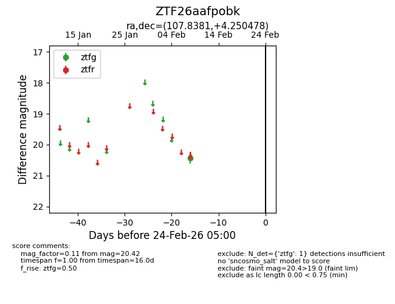
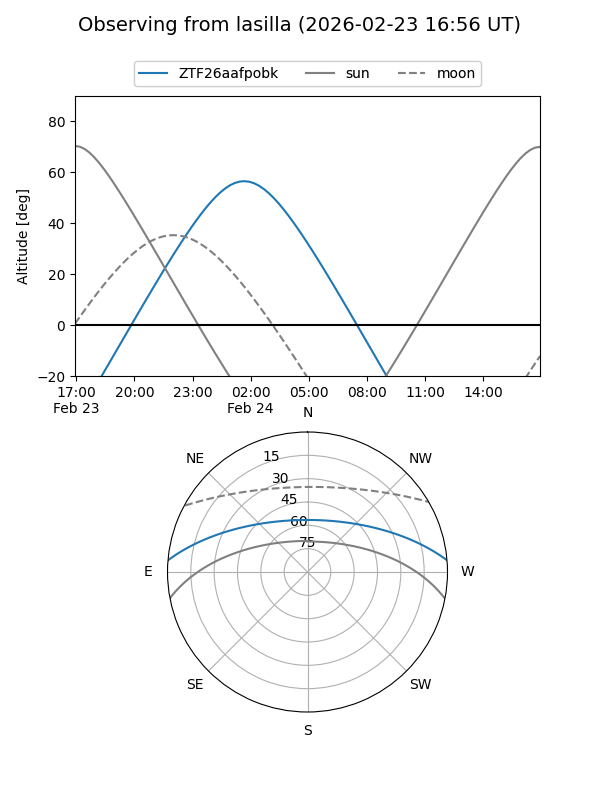
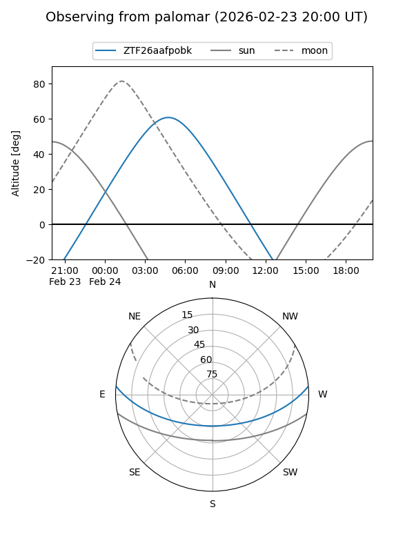

ZTF26aafpobk
Target ZTF26aafpobk at 2026-02-24 09:08
Aliases and brokers:
FINK: link
Lasair: link
ALeRCE: link
alt names
ZTF26aafpobk (ztf,fink_ztf)
Coordinates:
equatorial (ra, dec) = 107.8381,+4.25048
equatorial (HMS+DMS) = 07:11:21.15,+04:15:01.72
galactic (l, b) = (211.4040,+6.36264)
Flags:
Photometry:
last ztfg=20.42
1 ztfg detections
Lightcurve

Visibility


Additional plots